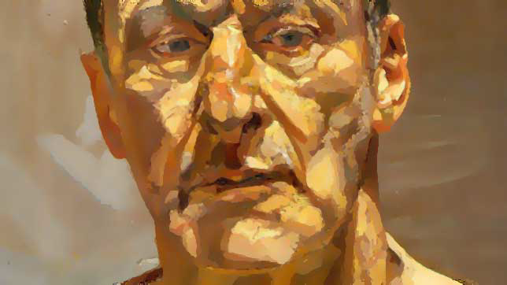

For this assignment, I will be implementing the Image Analogies algorithm as discussed in the paper available here.
The executable and required library is available to download
here.
In order to create an image analogy, the suggested execution model is
A3 -k <weight> -epsilon <error> -analogy
<A> <A'> < <base> > <output>. For
all of the images on this page, the k and epsilon values are listed.
The k value is the weight between coherence and approximate matching. The paper discusses different weights they used; if none is specified, the program defaults to k=5.
The epsilon value is the amount of error allowed to the Approximate Nearest Neighbor search. Increasing this value above its default of zero will significantly speed up execution (and possibly make the resulting image look better).
There are also a few debug options available, listed here.
-reduce
This will run a single pass of the reduce function which is used to
create the Gaussian Pyramids. This first applies a gaussian blur, then
does a simple subsample to reduce the image’s dimensions by
half.
-max_levels
This will limit the maximum number of levels the Gaussian Pyramids are
permitted. This may be desirable if all source images are very large,
although the higher levels of the Gaussian Pyramids require radically
less computation than the lower, and so saved time will be marginal.
-gp
This calculates the Gaussian Pyramid for the source image and outputs the
flattened pyramid.
-rgp <out_file>
This outputs the pyramid calculated during the creation of the image
analogy to the given output file.
-lumi <base_file>
This does a luminance transfer from the base file to the standard input
file.
The process of Image Analogies has four major steps, as described in the paper. First, Gaussian Pyramids are created by blurring and then subsampling an image, blurring and then subsampling the resulting image, and repeating this process until one has an image which is too small to be blurred and subsampled. In the paper, a level of the pyramid with a low number represents a level with high coarseness - that is, the image has been blurred and subsampled more times than a level with a higher number. However, I represent them in the opposite manner, as this was the manner I felt was most naturally implemented. An example of a Gaussian Pyramid flattened into a single image is displayed below.
The Gaussian Pyramid allows the image to be analyzed at differing levels of coarseness; because there are fewer pixels in a higher level of the pyramid, a broader scope of the image's features may be inspected using the same operations as would be used to analyze fine details at a lower level of the pyramid.
The next step is to calculate the feature vectors for each pixel. These are used for searching and comparing which pixel is ideal for each location as the new image is constructed. While it would make initial sense for these to be the RGB values for each pixel, and it is suggested as such in the paper, further inquiry shows that the ideal feature vector for each pixel is actually just the single luminance value for the pixel. In the paper, it is referred to as the Y value in the YIQ scale. This allows scenes which are diverse in color to be compared intuitively, as the colors are effectively normalized to the luminance scale. The colors are then reconstructed from the B image in a sort of luminance transfer; an example is displayed below, in which the luminance from the first image is transferred to the second to produce the third.

A result from the implementation can be seen below. The first two images were used for training (A and A'), the third image as the base (B) image, and the final image is the resulting B' image. Key points to note are that while the top of the resulting image lacks any particular texture, the bottom two thirds are textured with various paint-style strokes, although with visible edge artifacts and not particularly sensible placement. In particular, one can notice that the imperfect implementation favors grabbing Lucian Freud’s ear and other large chunks of his face rather than mimicking single brush strokes. However, the created image is certainly more abstract than the base image. This was created with the hardcoded default values of k=5 and epsilon=0.0.



Note, however, that the writers of the paper recognize that there must be some input tweaking in order to get good results. Using the same A and A' images as above, and the B image below, the B' image below was created using k=1, epsilon=5.0. Note that more of the ‘artistic effect’ was captured here, although there are some artifacts created from a faulty YIQ mapping.
While far from pretty, the gaussian pyramid generated alongside this image is displayed below. Like the images above, it has been scaled to fit the page.
After fixing the YIQ bug, the image and gaussian pyramid below were generated using the same values as above (k=1, epsilon=5.0).


These results are looking pretty good; however, it should be noted that no displacement is occuring here. The color at each pixel is the luminance from the selected A' pixel matched with the I and Q values from the source B pixel at the destination location; thus, despite the strokes applied to the roof of the shed being curved, one can notice that there remains a distinct straight edge to the shed. This is extracted from the shed for clarity below.